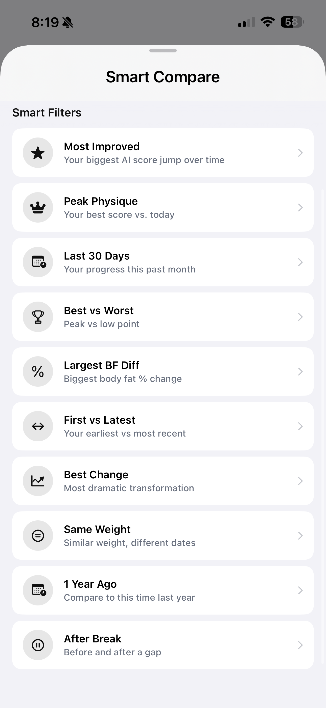
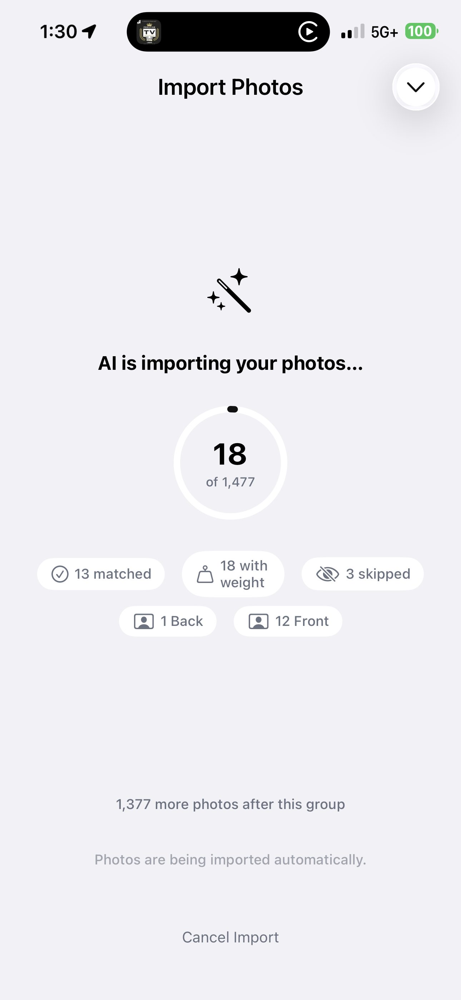

5 Tips for Better Progress Photos (No Tripod Needed)
Your progress photos are only as good as your consistency. These five simple habits make your before-and-after comparisons dramatically clearer—and GainFrame handles the rest.
Taking great progress photos is one of the most underrated skills in fitness. You've been snapping gym selfies for months — maybe years. But when you put two progress photos side by side, the comparison falls apart. Different angles. Different lighting. Different crops. One photo is a mirror shot from four feet away; the other is a selfie from arm's length. It's hard to see what actually changed when everything else is different too.
Good progress photos don't require a professional setup. You don't need a tripod, a ring light, or a dedicated photo studio. You just need a handful of consistent habits — and a tool that handles the alignment for you. Here are five tips to dramatically improve your progress photos starting today.
1. Lock in your lighting for consistent progress photos
Lighting is the single biggest variable in how your physique looks in a photo. Hard, directional light creates deep shadows that exaggerate muscle definition. Soft, flat light smooths everything out. Neither is wrong — but switching between them makes comparison impossible.
The fix is simple: pick one spot and stick with it.
For most people, that's the gym locker room or the same bathroom at home. The lighting doesn't need to be perfect. It needs to be repeatable. If your Monday photo has overhead fluorescents and your Thursday photo has warm window light, the difference you see between them has more to do with the lighting than your body.
Pro tip: Morning photos in natural light tend to be the most consistent day-to-day. You're also at your leanest in the morning (before meals and hydration), which gives you the most accurate visual baseline.
2. Use the Ghost Overlay Camera for repeatable progress photos
This is the feature that replaces a tripod.
GainFrame's built-in camera shows a transparent overlay of your last progress photo while you're shooting a new one. You can see your previous pose, angle, and framing right on top of the live viewfinder — and match it in real time.
Instead of trying to remember "Where was I standing? How was I holding the phone? Was I flexing or relaxed?" — you just line up with the ghost image and shoot.
The result: two photos that are nearly identical in pose, crop, and positioning. The only thing that changes between them is your physique — which is exactly what you want to compare.
Ghost Overlay
Transparent image of your last photo overlaid on the live camera. Match your exact pose without a tripod.
Auto Alignment
ML-powered body detection aligns your photos by shoulder line and torso position — even if you moved between shots.
Even if your overlay alignment isn't 100% perfect, GainFrame's auto body alignment uses machine learning pose detection to snap your progress photos into alignment on the compare screen. It detects your shoulders, torso, and hips and scales and positions each image so the body regions match — automatically. Learn more about how this works in our guide on comparing before-and-after progress photos.
3. Pick two or three poses and repeat them in every photo
You don't need twelve angles. You need two or three that you can hit consistently every time.
The most informative poses for tracking physique changes:
- Front relaxed. Arms at your sides, standing naturally. Shows chest, shoulders, arms, and abs without the distortion of flexing.
- Back relaxed or back lat spread. The most underrated angle. Back development is invisible from the front, and it's often where the biggest visual changes happen.
- Side. Shows your posture, chest depth, arm thickness, and body fat distribution in a way that front-facing photos can't capture.
GainFrame organizes your photos by pose template — Front, Back, Side, Front Flexed, Back Flexed, and custom templates you create. When you compare photos, you're always comparing the same pose to itself. Your "Front" timeline stays clean, your "Back" timeline stays clean, and your "Side" timeline stays clean.
This sounds obvious, but most people take random gym photos without any system. Then when they want to see their progress, they're comparing a front selfie from January to a side mirror shot from March. The result is confusing, not motivating.
GainFrame's smart compare filters make finding the right pair effortless — filter by pose, date range, or score to quickly surface the best before-and-after match.

4. Don't overthink the schedule — just be regular
You don't need daily progress photos. In fact, daily photos are counterproductive — your body doesn't change visibly in 24 hours, so all you're tracking is water retention and meal timing.
Once a week is the sweet spot for most people. Enough frequency to catch meaningful changes, not so frequent that it becomes obsessive.
Pick a day and approximate time — for example, every Sunday morning before your first meal. Set a reminder if it helps. GainFrame can send you a weekly photo reminder notification on the day and time you choose during onboarding.
The key is consistency over perfection. A slightly imperfect photo taken every week for six months tells a much clearer story than a handful of "perfect" shots taken randomly.
Missing a week doesn't matter. What matters is the trend. GainFrame's AI analysis works best when it has at least 3 photos of the same pose spread across time — enough to identify patterns, not just noise.
5. Import your old progress photos — they count
Here's the thing most people miss: you probably already have months or years of progress data sitting in your camera roll.
Random gym selfies. Post-workout mirror shots. Beach photos from last summer. Photos you sent to friends or posted on Instagram and then forgot about. All of those are progress photos with body composition data that the AI can analyze.
GainFrame's batch import lets you select hundreds — or thousands — of photos from your camera roll at once. The AI automatically:
- Classifies each photo by pose. Front, Back, Side, Flexed — the AI determines which template each photo belongs to.
- Sorts them chronologically. Your timeline builds itself.
- Scores each photo. Every imported photo gets an AI physique score, so you can see how your score has changed over months or years.
- Skips screenshots and non-body photos. It won't import your food photos, memes, or screenshots — only gym and physique photos.
The result? A transformation timeline that goes back as far as your camera roll does. You didn't need to start tracking from day one. You just needed to take the photos — and let the AI organize them later.

The bottom line on better progress photos
Taking better progress photos doesn't require better equipment. It comes from better habits:
- Same lighting, same spot. Consistency beats perfection.
- Ghost overlay camera. Match your last pose without a tripod.
- Two or three repeatable poses. Front, Back, and Side cover everything.
- Weekly cadence. Regular beats frequent.
- Import your old photos. Your transformation timeline might already exist.
Start with what you have. GainFrame handles the alignment, the scoring, and the comparisons. You just have to show up and take the photo. Once you've built a collection of consistent progress photos, you can use features like the AI physique score to track your transformation over time.
Related posts
- Before & After: How to Compare Progress Photos the Right Way
- How AI Body Composition Analysis Works
- Understanding the AI Physique Score
- Timeline Tracking Guide: Visualize Your Transformation
Get early access
Be the first to try GainFrame — we'll email you when it launches.
Free · No spam · Unsubscribe anytime